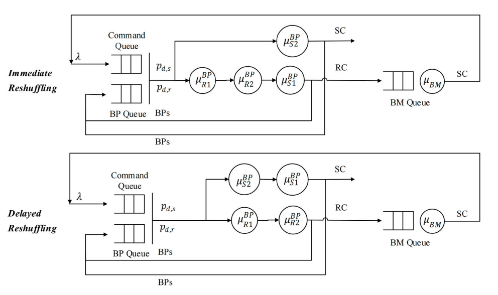
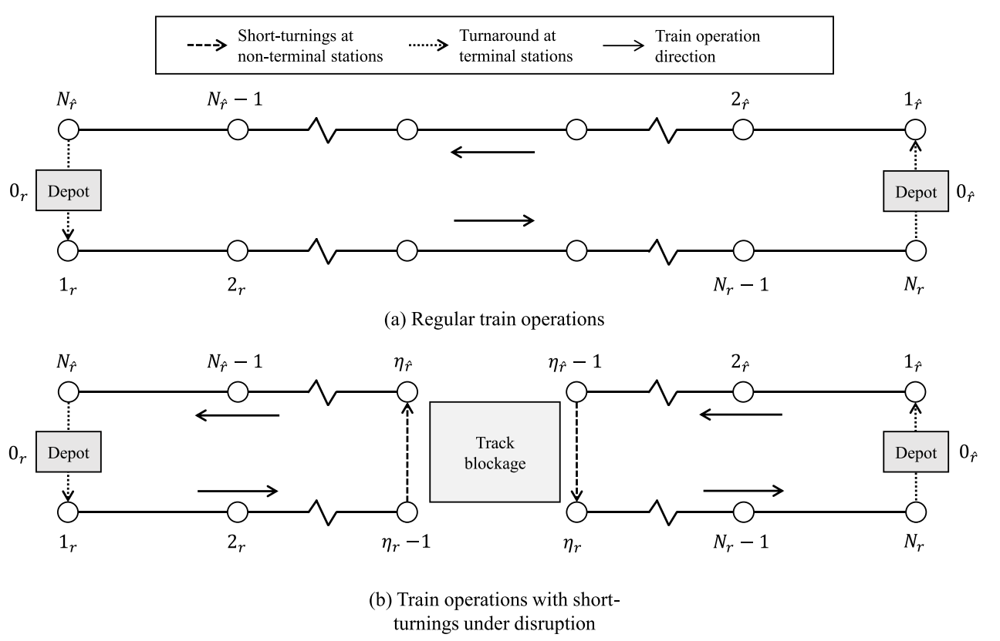
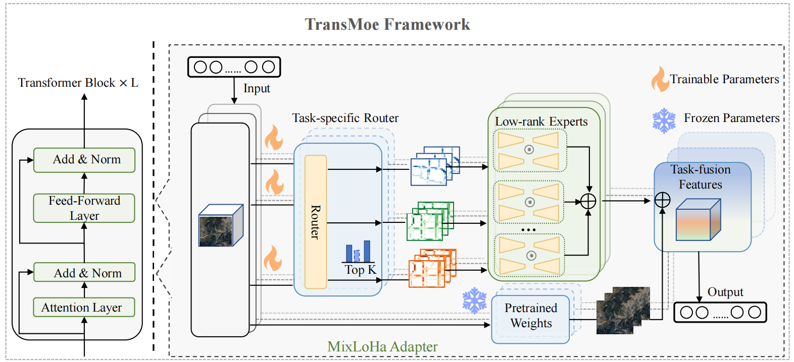
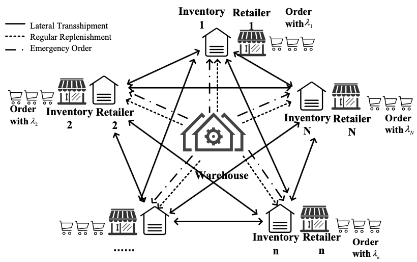

About Me
Hi, my name is Yimo Yan. I am an upcoming Assistant Professor at the American University of Sharjah, United Arab Emirates. My research focuses on reinforcement learning, multimodal learning, and data-driven optimization for transportation, logistics, and supply chain systems. I am particularly interested in integrating large language models with operational research and decision-making frameworks to address complex real-world challenges.
My work has been published in leading journals including Information Fusion, Transportation Research Part series, International Journal of Production Research, Health Care Management Science. I received my Ph.D. from The University of Hong Kong, where I was advised by Prof. Yong-hong Kuo. I welcome collaboration opportunities in AI-driven operations, intelligent transportation systems, and multimodal decision analytics.
Experience
Department of Industrial Engineering
Assistant Professor
Sep 2026 – Now
Education
University Research Committee Postdoctoral Fellowship
Oct 2025 – Aug 2026
Supervisor: Prof. Yong-hong Kuo
Doctor of Philosophy in Industrial Engineering
Sep 2020 – Sep 2025
Supervisor: Prof. Yong-hong Kuo

Master of Engineering in Civil and Environmental Engineering
Sep 2016 – Jun 2020
Thesis Supervisor: Prof. Panagiotis Angeloudis
Publications
Yan, Y., Cui, S., Liu, J., Zhao, Y., Zhou, B., & Kuo, Y. H. (2024). Multimodal Fusion for Large-Scale Traffic Prediction with Heterogeneous Retentive Networks. Information Fusion, 114, 102695.
Yan, Y., Wen, H., Deng, Y., Chow, A. H., Wu, Q., & Kuo, Y. H. (2024). A mixed-integer programming-based Q-learning approach for electric bus scheduling with multiple termini and service routes. Transportation Research Part C: Emerging Technologies, 162, 104570.
Yan, Y., Deng, Y., Cui, S., Kuo, Y. H., Chow, A. H., & Ying, C. (2023). A policy gradient approach to solving dynamic assignment problem for on-site service delivery. Transportation Research Part E: Logistics and Transportation Review, 178, 103260.
Yan, Y., Chow, A. H., Ho, C. P., Kuo, Y. H., Wu, Q., & Ying, C. (2022). Reinforcement learning for logistics and supply chain management: Methodologies, state of the art, and future opportunities. Transportation Research Part E: Logistics and Transportation Review, 162, 102712.
Wu, Q., Han, J., Yan, Y., Kuo, Y. H., & Shen, Z. J. M. (2025). Reinforcement learning for healthcare operations management: methodological framework, recent developments, and future research directions. Health Care Management Science, 28(2), 298.
Kang, Y., Wang, R., Qin, Z., Yang, P., & Yan, Y. (2025). Warehouses with heterogeneous robots collaboration: operational policies and performance analysis. International Journal of Production Research, 1-29.

Deng, Y., Chow, A. H., Yan, Y., Su, Z., Zhou, Z., & Kuo, Y. H. (2024). Hierarchical production control and distribution planning under retail uncertainty with reinforcement learning. International Journal of Production Research, 1-19.
Ying, C., Chow, A. H., Yan, Y., Kuo, Y. H., & Wang, S. (2024). Adaptive rescheduling of rail transit services with short-turnings under disruptions via a multi-agent deep reinforcement learning approach. Transportation Research Part B: Methodological, 188, 103067.

Submitted Research Works
Cui, S., Shen, S., Yan, Y., et al. (2025). TransMoE: Multimodal Traffic Prediction with Large Language Model and Mixture of Experts. Transportation Research Part C: Emerging Technologies. (Major Revision)

Yan, Y., et al. (2025). Large Language Models for Traffic and Transportation Research: Methodologies, State of the Art, and Future Opportunities. Information Fusion. (Major Revision)
Yan, Y., et al. (2025). Event-driven policy optimization for dynamic ambulance dispatch: An attention-based reinforcement learning approach. Transportation Research Part E. (Major Revision)
Ongoing Research
Structure-Informed Data-Driven Lateral Transshipment Policy for Multi-Retailer System.

Large Language Models for Traffic and Transportation Research. (Major Revision, Information Fusion)
TransMoE: Multimodal Traffic Prediction with Large Language Model and Mixture of Experts. (Major Revision, TR Part C)
Event-driven policy optimization for dynamic ambulance dispatch. (Major Revision, TR Part E)
Professional Service
Supervision of Master’s Dissertation
Multiple master dissertations in reinforcement learning, warehouse systems, supply chain LLM systems, and ambulance dispatch optimization.
Journal Reviewer
Transportation Research Part E; European Journal of Operational Research; International Journal of Production Research; PLOS One.
Student Helper & Society Participation
Hong Kong Society for Transportation Studies; HKU Institute of Transport Studies.